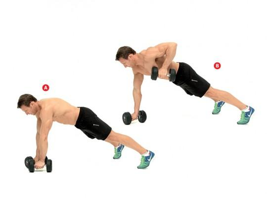
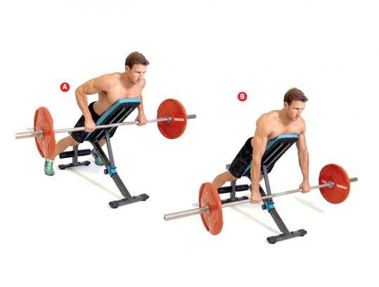
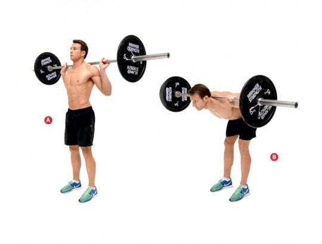

Nasz grzbiet to cała grupa mięśni pełniących wiele funkcji. Dobrze rozwinięte sprawiają, że sylwetka nabiera kształtu litery V. Do największych i najbardziej widocznych możemy zaliczyć mięśnie najszerszy i czworoboczny oraz prostownik grzbietu.
Aby trening pleców był kompletny, pamiętajmy o wykonaniu ćwiczeń opartych na przyciąganiu wertykalnym, np. podciąganie na drążku, oraz horyzontalnym, np. wiosłowanie sztangą.
Przyjmij pozycję do pompki, opierając się na parze hantli. Upewnij się, że Twoje ciało od kostek po głowę tworzy linię prostą – napnij mięśnie korpusu i pośladki, aby zapobiec opadaniu bioder (A). Przyciągnij lewą hantlę do boku klatki (B), opuść ją do startu. Powtórz ruch drugą ręką. To jedna repeta. Odpoczywaj 60 sekund między seriami.
Ustaw ławkę na skos. Połóż się na niej przodem, mocno opierając się palcami stóp o podłoże. Poproś kumpla, aby podał Ci sztangę. Ściągnij łopatki. Przyciągnij sztangę do oparcia ławki (A), zatrzymaj na sekundę ruch, po czym wyprostuj ręce do pozycji startowej (B). Staraj się ruch do góry robić 3 razy szybciej niż ruch sztangi w dół. Pauzuj 90 s między seriami.
Stań prosto ze sztangą opartą na górze pleców i trzymaną szerokim nachwytem. Stopy rozstaw na szerokość barków (A). Wypchnij biodra w tył i do góry, aby pochylić tułów do przodu. Ruch zatrzymaj, gdy będzie w pozycji równoległej do podłoża (B). Wróć do pozycji początkowej. Zacznij z pustym gryfem i stopniowo, gdy poczujesz się bardziej pewnie, zwiększaj ciężar. Pauzuj 90 s między seriami.
Autor strony: 0000000000